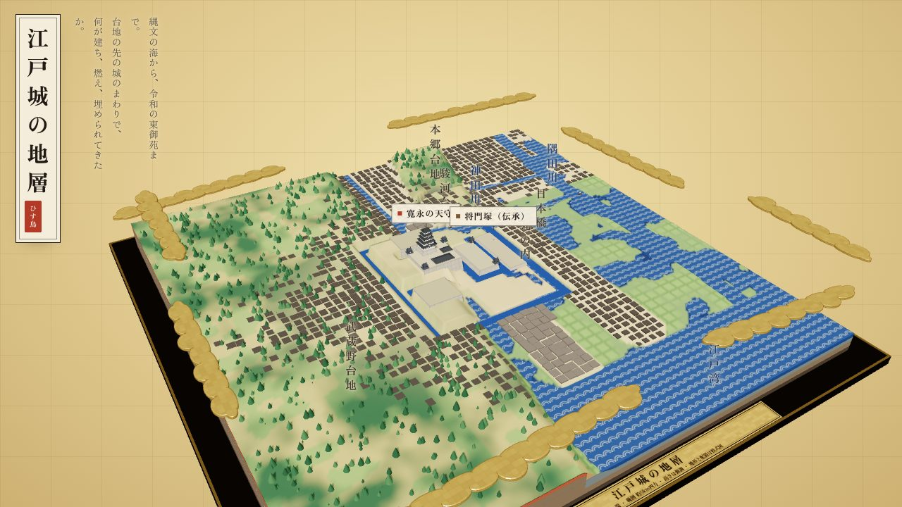
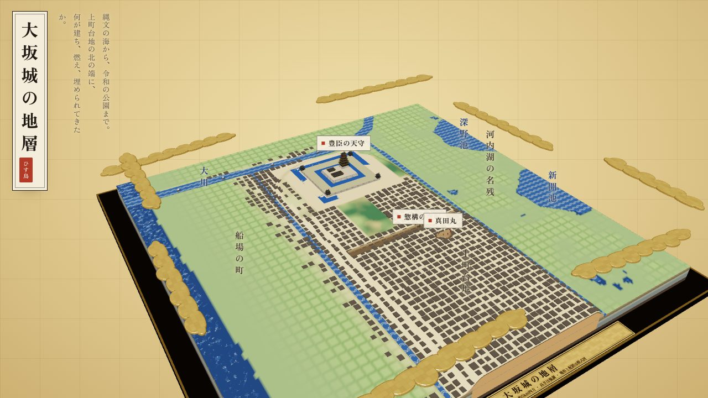
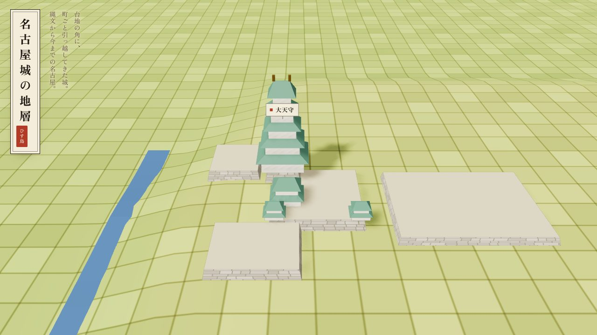
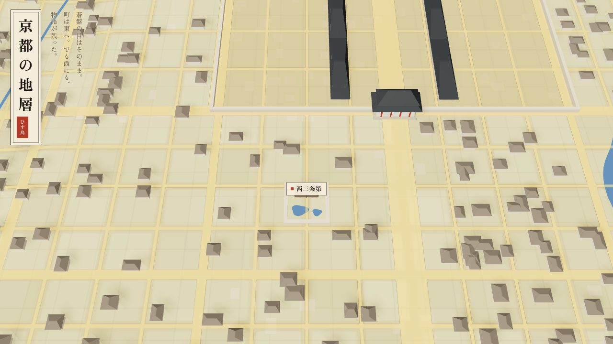
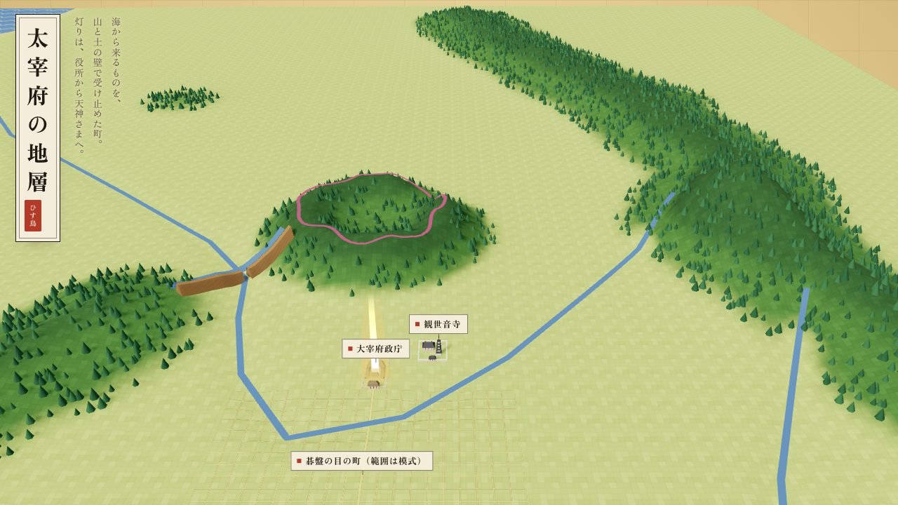
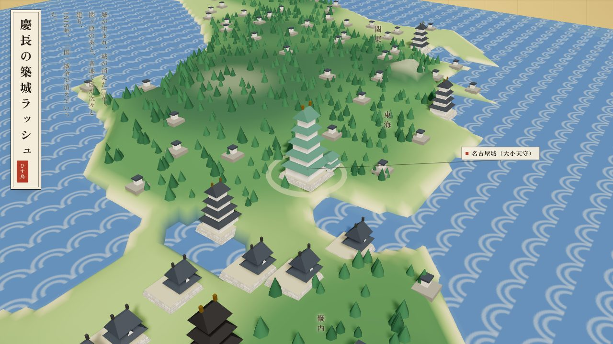
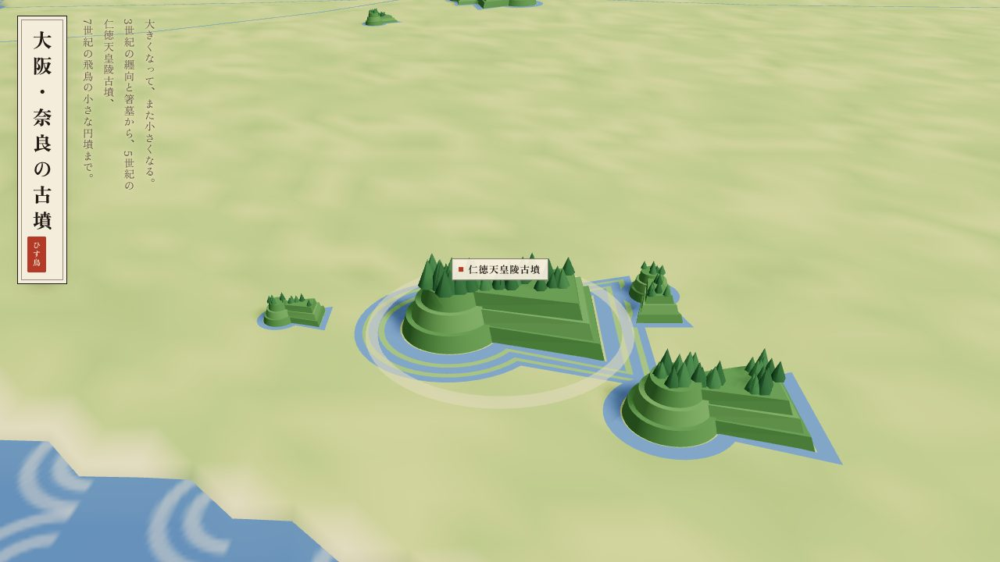
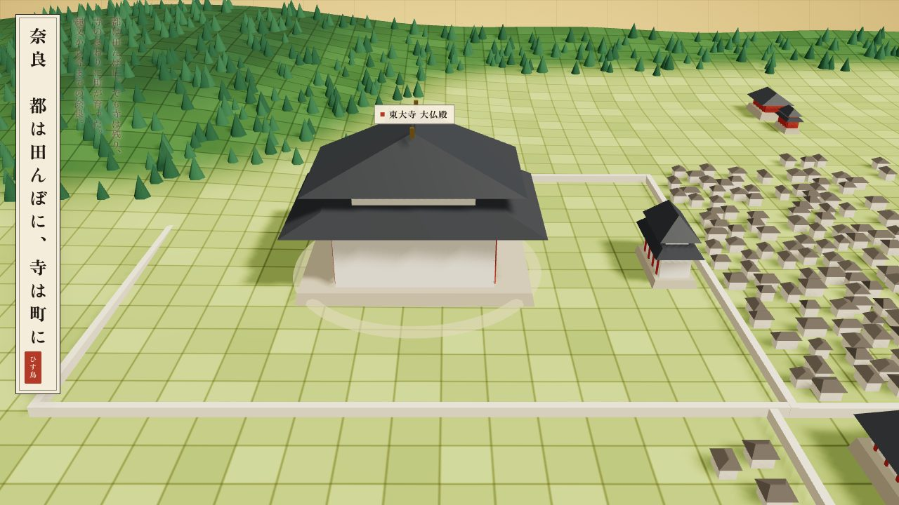
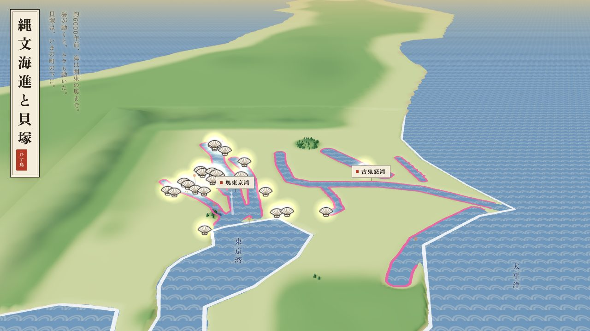
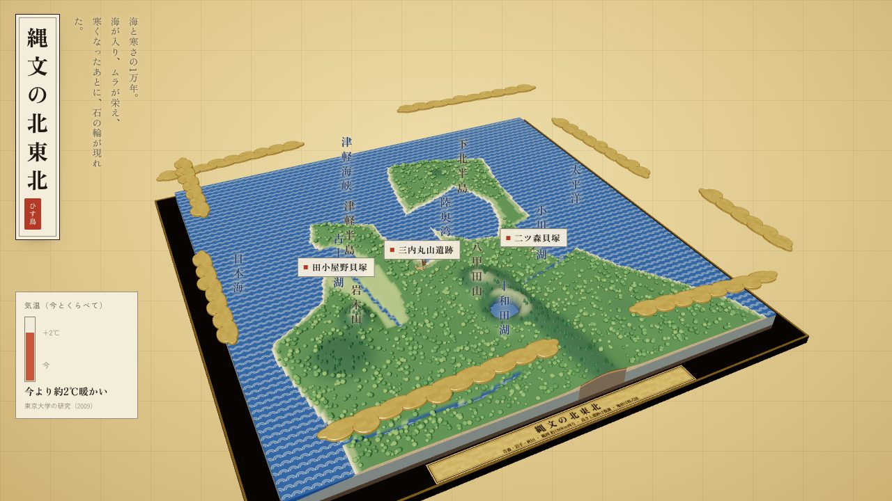

その土地で、
何が建ち、燃え、
埋められてきたか。
城や都や古墳のまわりの移り変わりを、時代をたどって動かせる3D模型にしています。インスタで公開している「動く歴史地図」を、ここではさわって遊べます。回したり、寄ったり、地面の下を透かしたり。
地形と建物の配置は模式図です。建物や古墳の大きさは見やすいように強調しています。年代や数字には、模型の中で出典を添えています。
いただいた指摘と、直した記録 →
縄文の海から、令和の東御苑まで。山を崩して海を埋め、三度建った天守と、建たなかった天守。
直しました 3件 さわってみる
上町台地の北の端に、何が建ち、燃え、埋められてきたか。豊臣の城が土の下へ消えていく瞬間も。
直しました 3件 さわってみる
台地の角に、町ごと引っ越してきた城。清須越、金鯱、空襲、そして御殿の復元まで。
さわってみる
碁盤の目はそのまま。町は東へ。でも西にも、物語が残った。左京と右京、都の西の外まで。
English 版あり さわってみる
海から来るものを、山と土の壁で受け止めた町。灯りは、役所から天神さまへ。
さわってみる
城が生まれ、城が消えた15年。関ヶ原のあと各地で城が建ち、一国一城令で消えていった。
さわってみる
大きくなって、また小さくなる。纒向と箸墓から、仁徳天皇陵古墳、飛鳥の小さな円墳まで。
さわってみる
都は田んぼに。でも寺は残り、寺のまわりに町が育った。縄文から今までの奈良。
さわってみる
約6000年前、海は関東の奥まで。海が動くと、ムラも動いた。貝塚は、いまの町の下に。
さわってみる
海と寒さの1万年。海が入り、ムラが栄え、寒くなったあとに、石の輪が現れた。
さわってみる※ スマホでも動きます。指でなぞると回り、2本指で寄れます。下の年表の点を押すと、その時代へ飛びます。
インスタのコメントや見直しでいただいた指摘と、どう直したかの記録です。歴史は、たくさんの目で確かめながら描いていくもの。教えてくださった皆さん、ありがとうございます。
気づいたことがあれば、インスタのコメントやDMで教えてください。確かめて、直して、ここに書き足します。
お城、遺跡、町の移り変わり。展示や観光、授業や発信のための
「動く歴史地図」を、史料を確かめながら制作します。